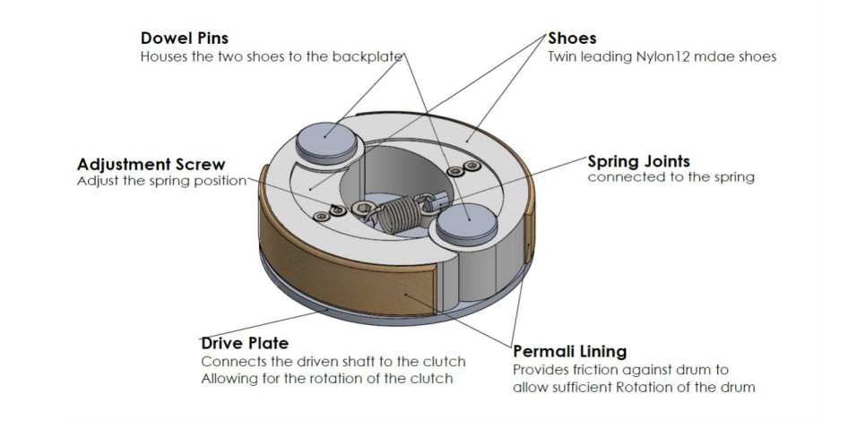

Project · Mechanical design
Centrifugal Clutch
A speed-dependent clutch combining mechanical analysis, CAD and manufacturing design.

Project overview
This group design-and-make project developed a centrifugal clutch to transfer rotational power from a motor to a generator once the motor reaches a chosen engagement speed. The design balances centrifugal force, spring restraint and frictional contact to connect the rotating input with the output drum.
The team design uses twin leading shoes, dowel pins, an adjustable spring arrangement and a drive plate. Nylon 12 shoes carry Permali friction linings that contact an aluminum drum when centrifugal force exceeds the spring restraint.
Design requirements included engagement around 1,200 rpm and a minimum transmitted torque of 0.5 N·m at 2,300 rpm. Calculations informed spring stiffness, shoe geometry and mass, shaft sizing, material selection and component fits.
The critical design review combined annotated CAD, mechanical calculations, manufacturing considerations and an iterative design process. These are team design targets and analysis documented in the report, rather than claimed measured test results.